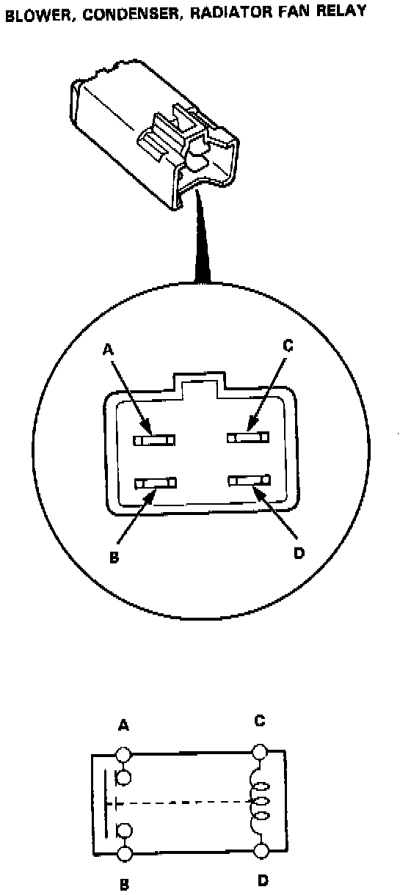
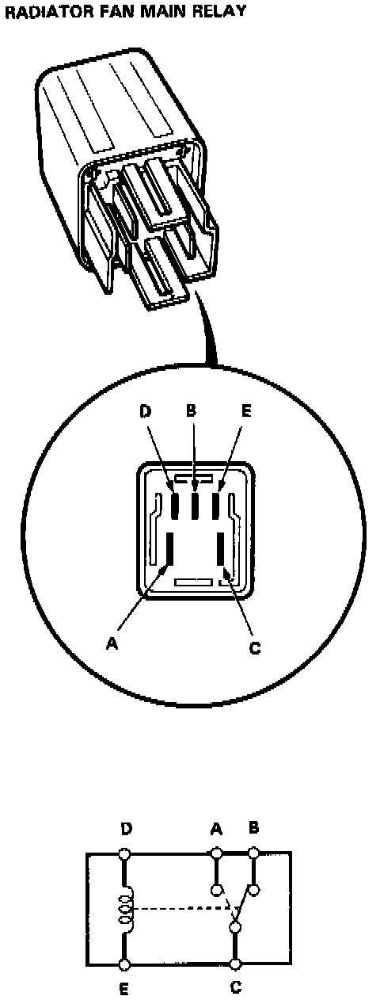

Condenser Fan Motor Relay: Testing and Inspection

CONDENSER AND RADIATOR FAN RELAYS (4 PIN)
There should be continuity between the A and B terminals when the battery is connected to the C and D terminals.
There should be no continuity when the battery is disconnected.

RADIATOR FAN MAIN RELAY (5 PIN)
There should be continuity between the A and C terminals when the battery is connected to the D and E terminals. There should be no continuity when the battery is disconnected.